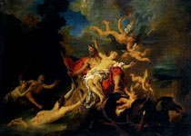

Аїд, Гадес, Плутон ("невидимий", "жахливий"), в грецькій міфології бог царства мертвих, а також само царство. Син Кроноса і Реї, брат Зевса, Посейдона, Гери, Деметри і Гестії. Під час поділу світу після повалення батька Зевс забрав собі небо, Посейдон - море, а Аїд - підземне царство; землею брати домовилися правити разом. Другим ім'ям Аїда було Полідегмон ("одержувач безлічі дарів"), що пов'язано з незліченними тінями померлих, що мешкають в його володіннях.
Посланець богів Гермес перепроваджував душі померлих до поромника Харону, який перевозив через підземну річку Стікс лише тих, хто міг заплатити за переправу. Вхід в підземне царство мертвих охороняв триголовий пес Кербер (Цербер), нікому не дозволяв повернутися в світ живих.
Подібно стародавнім єгиптянам, греки вважали, що царство мертвих розташоване в надрах землі, а вхід в нього - на крайньому заході (захід, захід - символи вмирання), за річкою Океан, що омиває землю. Найпопулярніший міф про Аїді пов'язаний з викраденням їм Персефони, дочки Зевса і богині родючості Деметри. Зевс обіцяв йому свою красуню-дочку, не запитавши згоди її матері. Коли Аїд силою повів наречену, Деметра від горя мало не позбулася розуму, забула про свої обов'язки, і землю охопив голод.
Суперечка Аїда і Деметри з приводу долі Персефони дозволив Зевс. Дві третини року вона зобов'язана проводити з матір'ю і одну третину - з чоловіком. Так виникло чергування пір року. Одного разу Аїд закохався в німфу Мінто або М'яту, яка була пов'язана з водою царства мертвих. Дізнавшись про це, Персефона в пориві ревнощів перетворила німфу в пахуче рослина.